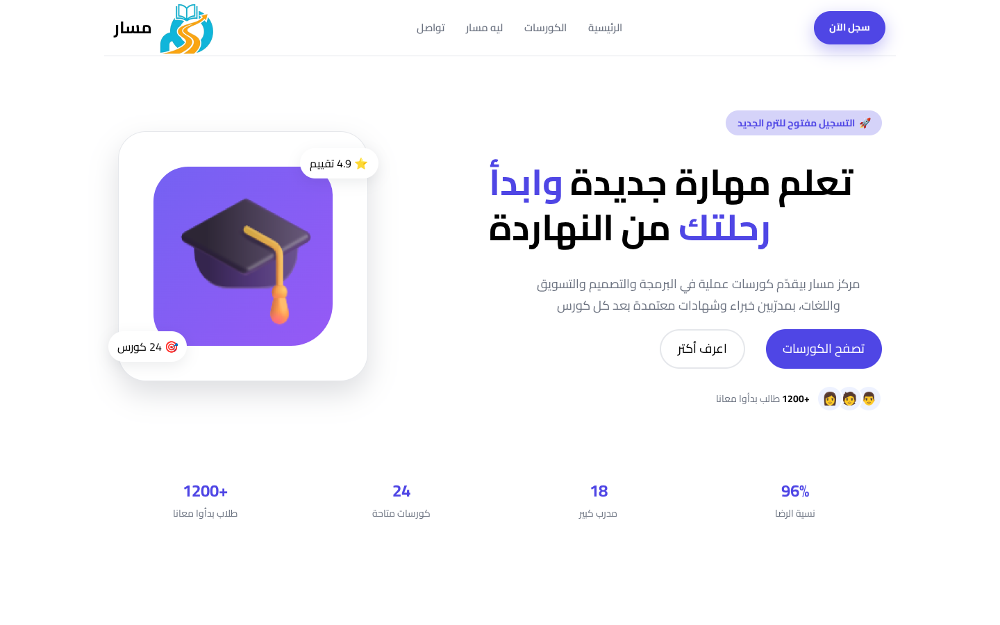
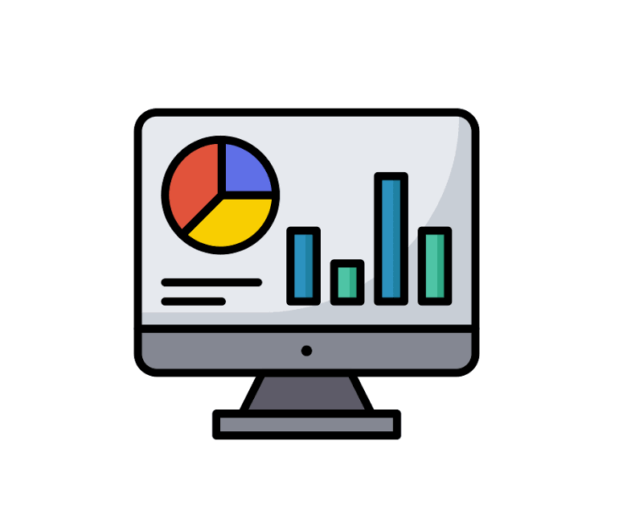

ZM
Portfolio Website
Responsive personal portfolio built with semantic HTML, Tailwind CSS v4 theme tokens, and CSS orbit animations.
FRONTEND DEVELOPMENT
Frontend projects and web security practice
HTML · CSS · Tailwind CSS · Aspiring Penetration Tester
Active builds and upcoming coursework. Only verified demos and repositories carry live links.
Responsive personal portfolio built with semantic HTML, Tailwind CSS v4 theme tokens, and CSS orbit animations.

Arabic RTL landing page for an educational training center featuring course tracks, benefits, and registration sections.

Analytics interface focusing on clean grid structure, metric cards, category filters, and empty states.
Editorial landing page centered on readable typography hierarchy, article cards, and balanced whitespace.
Launch announcement layout practicing centered Hero alignment, visual balance, and responsive spacing.
Reusable e-commerce card practicing price hierarchy, clean image framing, and smooth hover transitions.
Aspiring Penetration Tester
Building practical web security habits alongside frontend development. All testing practice takes place strictly in authorized training labs.
01. Practice Focus
Practicing web security fundamentals strictly inside authorized training labs and controlled practice targets.
02. Practice Focus
Learning how to write clear, reproducible findings that help developers understand both the risk and the fix.
03. Practice Focus
Checking applied fixes after remediation to verify the issue is closed and no new edge cases remain.
In preparation — first authorized lab write-up will be published here once documented and verified.
01 · Finding
Concise description of the observed vulnerability inside an authorized lab.
02 · Impact
What data or behavior could be affected in a real application context.
03 · Recommended Fix
Practical code or configuration changes needed to address the issue.
04 · Retest Verification
Confirmation that the issue no longer occurs after the fix.